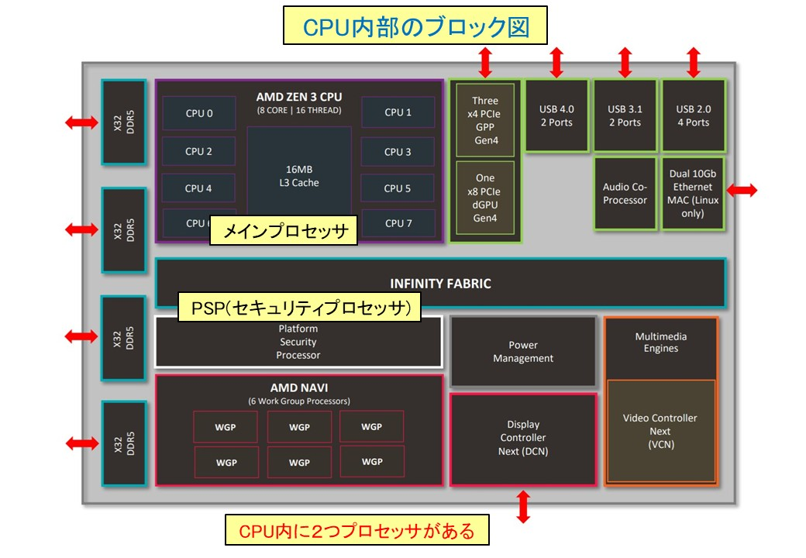
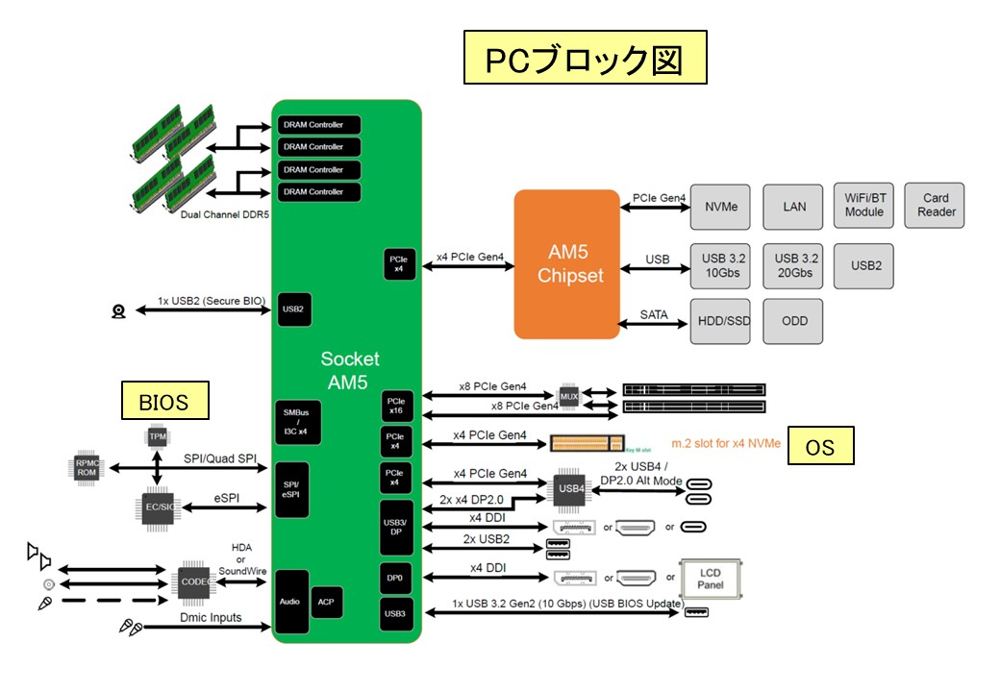
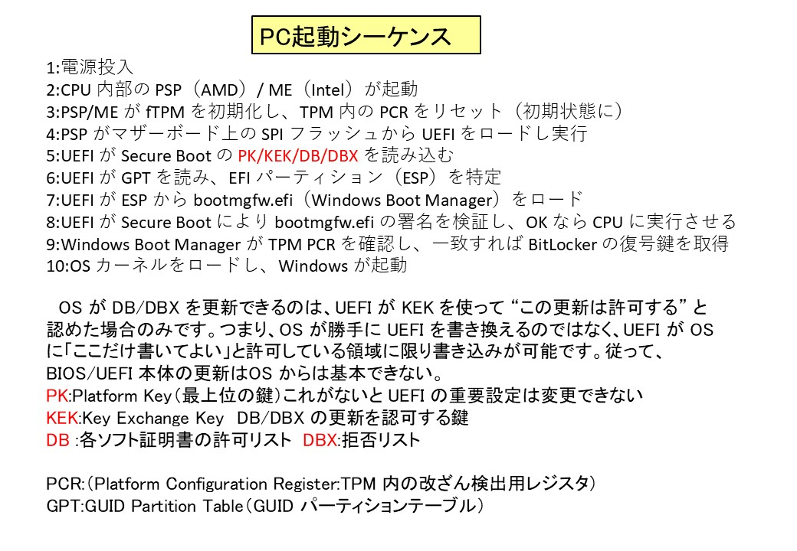
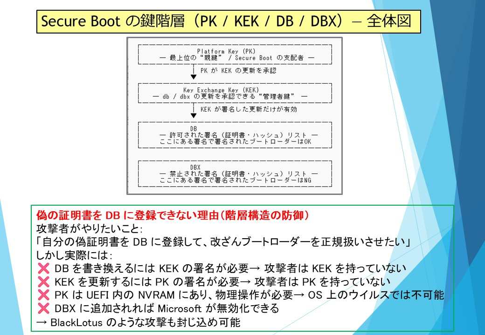
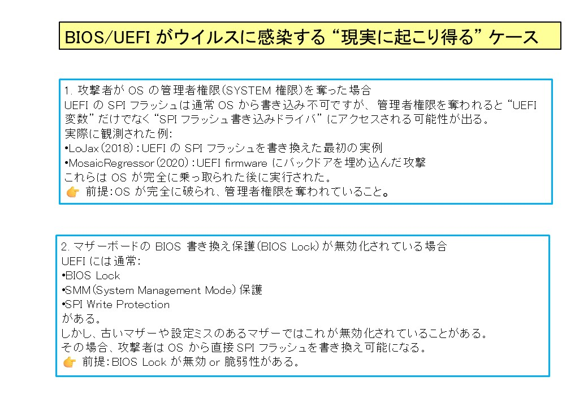
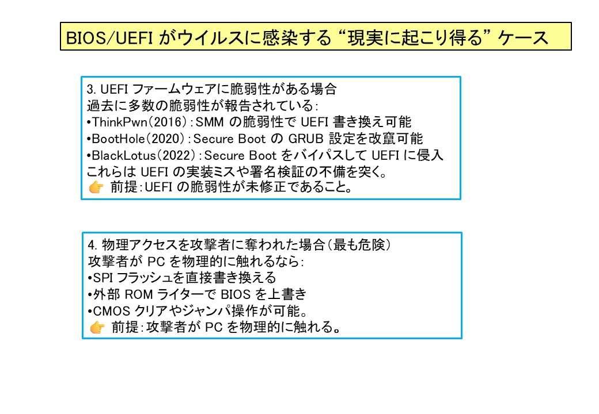
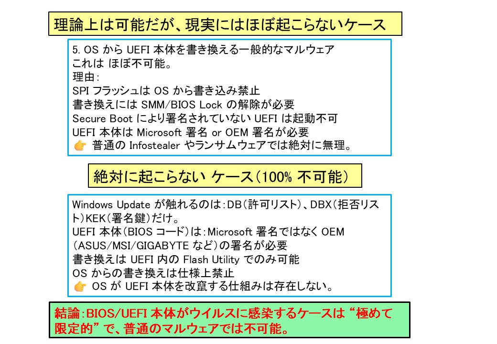

趣味は、ハイキング、草テニスと草数学です。
「Live as if you were to die tomorrow. Learn as if you were to live forever.」
FaceBook https://www.facebook.com/munehiro.shinabe.3
ここでは私の作品や写真を紹介します。

工学で使われている数学は、主に１８，１９世紀に発明されたものばかりですね！！


１）基本的に数学の本を読んでいて”もちんぷんかんぷん”で、何かしら手を動かさなないと理解不能う。最悪、写経になっても良いので？
２）細かい計算、数式の変形はソフトに任せ、本質的な流れに注視出来る。
３）数式処理で解けない（非線形式）は、数値解析で解き、本には出てない自分作成の問題も解けることがある。
４）数式に出てくる文字は沢山あり、画数の多い漢字とは違い、微妙な形で見分ける必要があり、大雑把な私には無理。後で識別不能！
**他にもありましたら、コメントください。
#mathematica #Tensor #テンソル #数学 #相対性理論
"msh_tensorial.wl"は Mathematica 上でテンソル計算を行うためのパッケージです。読み込んで、使用ください。
"msh_tensorial.wl"ダウンロード"msh_tensorial20251031.nb"は、具体的使用例です。
"msh_tensorial20251031.nb"ダウンロード著者：岡部洋一 東京大学/放送大学名誉教授 2021 年6 月16 日
Riemann.pdf をダウンロード著者：David C.Kay ISBN978-4-903814-90-2
"デイヴィッドC.ケイ_テンソル解析_プレアデス出版.zip"ダウンロード著者：田代嘉宏 広島大学 名誉教授 発行所：株式会社 裳華房
"田代嘉宏テンソル解析.zip"ダウンロードパスキー認証、少しずつ必須になってきたので気になり、PCのセキュリティシステムに踏み込んでしまい、
その沼から抜けれません。偉い人がウイルス対策で色々考案したのか、複雑すぎて良く分かりません。
現代の CPU の中には “2つのプロセッサ” が存在し,一つはセキュリティ専用で、それ用にROM,NVRAMがあるとは驚き！！



ウイルスが「偽の証明書」を登録しようとした場合： もしウイルスがマザーボード内の信頼済みリスト（db）に
自身の署名用証明書を無理やり登録し、 それを使って改ざんしたブートコンポーネントを
認証させたなら、PCはウイルスを「正規のプログラム」と誤認して起動してしまいます。





